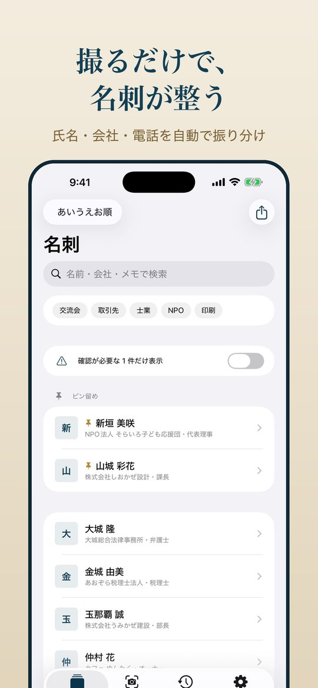
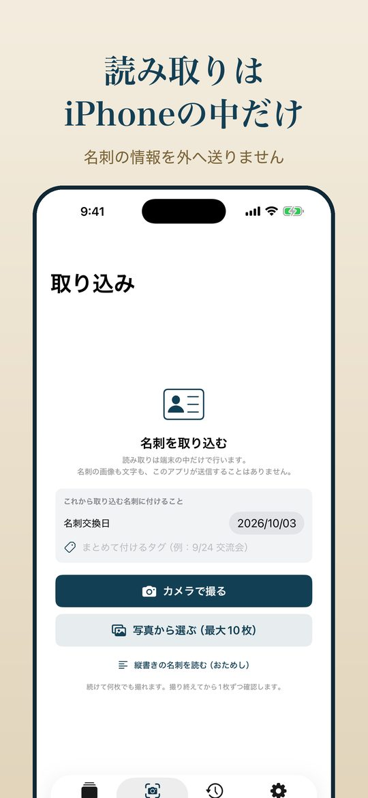
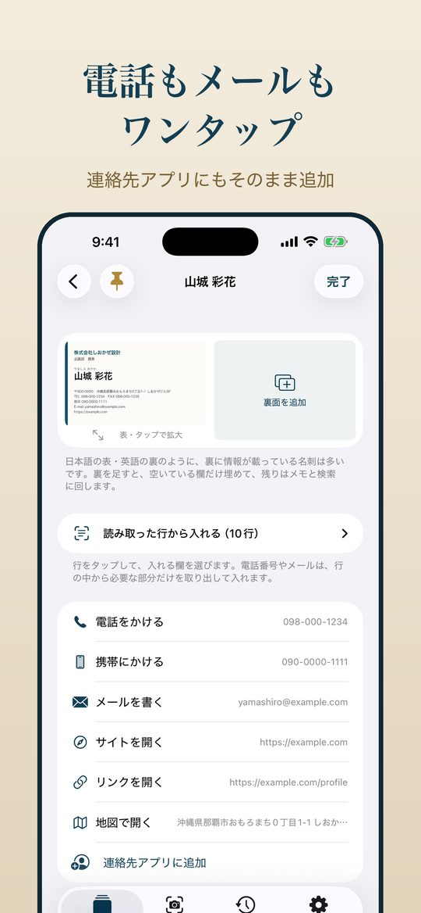
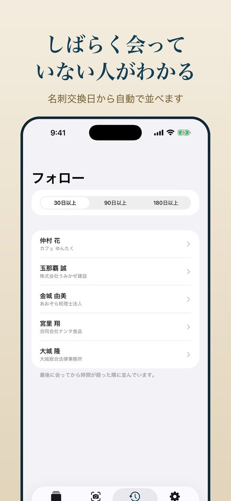
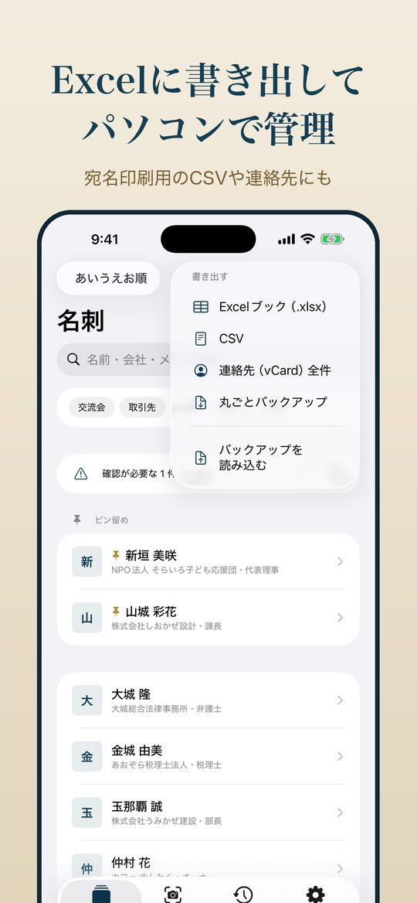

職場の決まりで、
クラウドの名刺アプリが使えない方へ
よく知られた名刺アプリの多くは、名刺の画像や連絡先を運営会社のサーバーに送って管理します。 便利な反面、仕事のルール上それができない方もいます。名刺金庫は、そうした方のために作りました。
役所・学校・病院・福祉の職員
外部のサービスに個人情報を預けられない職場でも、端末の中だけで完結します。
士業・医療・相談の仕事
守秘義務のある方の名刺を、誰かのクラウドに置かずに管理できます。
議員・地域団体・後援会
人のつながりそのものが大切な情報。名簿を外に出さずに、手元で整理できます。
撮るだけで、名刺が整う





- 読み取りは自動、確認は最小限氏名・ふりがな・会社・役職・電話・メール・住所を振り分けます。自信がない欄にだけ印が付くので、そこだけ見直せば保存できます。
- 縦書きの名刺も縦書きの名刺は自動で見分けて読み取ります。漢数字の電話番号にも対応しています。
- 同じ人をお知らせ以前に保存した方と同じ名刺を撮ると、その場でお知らせします。名刺が二重になりません。
- Excel・連絡先へ書き出しExcel ブック、CSV、宛名印刷用の住所録、iPhone の連絡先に書き出せます。書き出しはずっと無料です。
情報システムの担当者・上司に
説明するときは
利用の可否を確認されたときに、そのまま見せられるようにまとめました。
| 名刺の情報の保存場所 | 利用者の iPhone の中だけです。運営者のサーバーはありません。 |
|---|---|
| 名刺の情報の送信 | しません。文字の読み取り（OCR）も iPhone の中で行います。 |
| アカウント登録 | 不要です。メールアドレスなども求めません。 |
| 通信が起きる場面 | 枚数の制限を解除する購入・復元・コードの入力のときだけ、iPhone が Apple の App Store と通信します（名刺の情報は含まれません）。 |
| App Store の表示 | 「データの収集なし」 |
| のぞき見への備え | アプリを開くときに Face ID などでロックをかけられます。 |
| バックアップ | 利用者が自分で書き出したときだけ、ファイルとして作られます。iPhone の iCloud バックアップを使っている場合は、他のアプリと同じように本人の iCloud に含まれます。 |
| 削除 | アプリを削除すると、名刺の情報もすべて消えます。 |
詳しくは プライバシーポリシー をご覧ください。
料金
無料
名刺は20枚まで保存できます。読み取り・書き出しなど、機能はすべて使えます。
800円 買い切り
一度のお支払いで枚数の制限がなくなります。月額はありません。通信しないアプリなので、毎月かかる費用がないためです。
苦手なこと（正直に）
- 印刷がかすれた名刺や、影・反射が強い写真は読み取りを間違えやすくなります。明るい場所で真上から撮ってください。
- デザイン性の高い名刺（文字が斜め・装飾文字など）は、手で直す欄が増えます。
- iPhone の中だけで動くため、パソコンや他の人との自動共有はできません。共有は Excel などへの書き出しで行います。